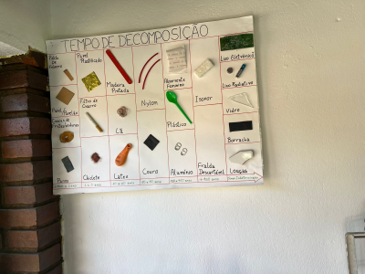
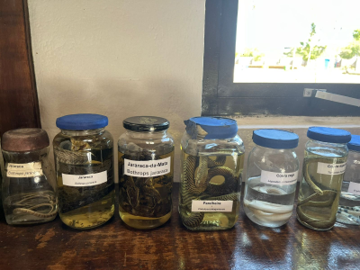
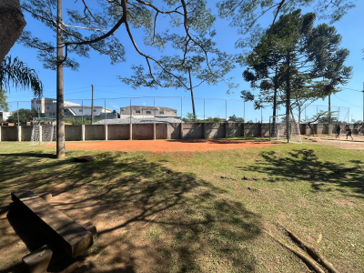

Bem Vindo(a)



Sobre o Parque
O parque ecológico da Várzea Aziz Ab ́Saber, foi criado com o objetivo de promover a preservação das áreas de várzea e do rio Embu-Guaçu e conscientizar a população sobre a importância deste tipo de vegetação para a sociedade e para os animais.
Hoje em dia, o mesmo possui um espaço aberto com diversas árvores, mesas, playground, áreas para jogos, sendo tudo disponibilizado gratuitamente.
Para promover uma melhor utilização do uso do ambiente e comportar um maior número de pessoas, está passando por reformas estruturais e a criação de projetos sociais dentro do espaço.